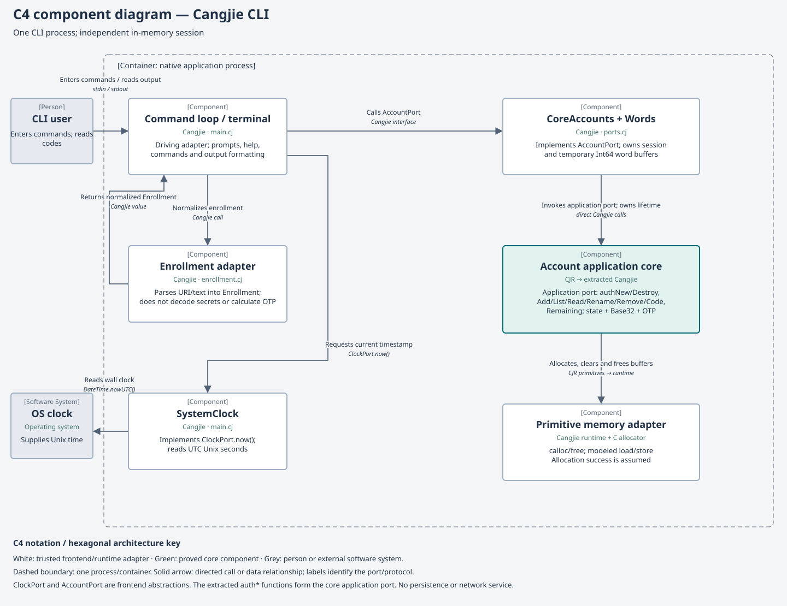

Cangjie CLI application
Contents
Build and start
Run commands from the repository root. Use the repository’s Rocq toolchain and pinned Cangjie 1.0.5 compiler. CJC and CANGJIE_HOME override the compiler and SDK locations. On a fresh checkout, build and validate the core first:
make -C example/authenticator build
make -C example/authenticator test
make -C example/authenticator proofsFrontend builds check that the passed proof report, contract manifest, Rocq sources and tested extraction still match. A stale/missing report must be regenerated with the commands above. Do not edit the extracted Cangjie to bypass this gate.
make -C example/authenticator run-cliThe prompt is auth>. After building, you can run example/authenticator/build/frontend/authenticator directly. The executable records its local Cangjie runtime path. This is an interactive application: keep one process open while managing its accounts.
Accounts exist only in this process. quit, or EOF at the command prompt (Control-D in a terminal), closes and clears the session. Restarting begins empty. The SwiftUI app has a separate session.
Enroll and display a code
Manual enrollment
- Enter
add. - Enter an account label and optional issuer.
- Enter the Base32 secret at the secret prompt.
- Enter 6 or 8 digits, or leave blank for 6.
- Enter the period in seconds, or leave blank for 30.
- Use the returned account ID with
codeorlist.
Secrets are read from standard input, not shell arguments. The CLI uses ordinary terminal line input; it does not disable terminal echo.
Reproducible example
This is a public RFC test secret, suitable for a demonstration:
auth> add
Label: Demo
Issuer (optional): Example
Base32 secret: GEZDGNBVGY3TQOJQGEZDGNBVGY3TQOJQ
Digits [6]: 8
Period [30]: 30
Added account 1.
auth> code 1 59
94287082 | 1s remainingFor a live code use code 1. The optional timestamp is nonnegative Unix seconds, up to signed Int64 maximum; it changes only that request. CLI codes refresh when you issue a command, rather than automatically.
URI enrollment
Enter uri, then paste the URI at its prompt. For the same demonstration account:
otpauth://totp/Example:Demo?secret=GEZDGNBVGY3TQOJQGEZDGNBVGY3TQOJQ&issuer=Example&digits=8&period=30Both apps support SHA-1 TOTP, six or eight digits, periods from 1 to 2,147,483,647 seconds, and at most 16 accounts. Defaults are six digits and 30 seconds. Labels occupy 1–128 UTF-8 bytes; issuers occupy 0–128. Duplicate labels are allowed; IDs distinguish accounts.
Enrollment accepts a manual Base32 secret or an otpauth://totp URI. The core accepts canonical upper/lowercase Base32 with optional padding and no whitespace. URIs accept secret, issuer, algorithm=SHA1, digits and period. Unknown or repeated fields, HOTP URIs, mismatched issuer prefixes, and malformed percent encoding are rejected. Encode spaces as %20; plus signs remain literal.
Command reference
help/help <command>- List commands or show a command’s purpose, arguments and an example. Try
help code. add- Prompt for manual enrollment fields. Returns a positive ID on success. Invalid input or a full session is rejected.
uri- Prompt for a TOTP URI and enroll its normalized fields. Do not put the URI after the command.
list- Show ID, label, issuer, digit count and period. Does not print secrets. Listing order can change when storage slots are reused.
code <id> [unix-seconds]- Print a zero-padded code and whole seconds remaining. Without a timestamp, uses the system clock. At a period boundary the countdown is a full period. Example:
code 1 59. rename <id>- Prompt for a new label and issuer. This changes display metadata, while retaining the secret, parameters and ID. Example:
rename 1. remove <id>- Remove and clear the account immediately, with no confirmation prompt. Example:
remove 1. A later enrollment receives a new ID. quit- Destroy this process’s session and exit. EOF at the command prompt also exits. EOF during a field prompt rejects the incomplete request; the next command read observes EOF and exits.
Errors and common questions
- “Invalid command or arguments”
- Commands are case sensitive. Follow the displayed syntax.
addanduritake their fields through prompts. Usehelp. - “Enrollment rejected” / “Request rejected”
- Check Base32 canonical padding/tail bits, digit count, period, UTF-8 field lengths and URI fields. A session holds 16 accounts. Remove an account to make room. A rejected core operation preserves existing accounts.
- Unknown account
- Use
listfor IDs in the current process. An ID from a different or previous session does not identify the same account. - The code differs from a service
- Check the secret and parameters, then the machine’s current time. Omit the optional timestamp for live use. No network clock synchronization is performed by this app.
- Accounts disappeared
- This version has no persistence, import/export, sync, QR scanner, push approvals or passkeys. Keep the enrollment material elsewhere if you need to enroll again.
Hexagonal architecture

Notation follows the C4 component view and C4 notation guidance: one application container, typed components with responsibilities and technologies, named directed relationships, and a legend. Green identifies the proved core; it does not extend the proof claim to the surrounding adapters.
The command loop is the driving adapter. It depends on AccountPort and ClockPort, not on the core’s storage layout. CoreAccounts implements the account port by calling the extracted auth* application operations. URI parsing, terminal interaction, formatting and wall-clock access stay outside the core. The domain has no dependency on cli/ or operating-system APIs.
- Driving adapter: command loop and terminal
- main.cj reads commands, invokes the ports and formats output. Its help and numeric padding are presentation concerns.
- Frontend driving port:
AccountPort - ports.cj declares
add,ids,read,rename,remove,code,remainingandclose.EnrollmentandMetadataare adapter values. - Core adapter:
CoreAccountsandWords - Own a live core session and temporary word buffers, translate typed fields, and call the core application port. Each logical byte occupies one Int64 word. Standalone crypto and internal helpers are not commands.
- Time port and adapter
ClockPort.now()is implemented bySystemClock. The command loop supplies its result, or an explicit test timestamp, to the core. The core never reads a clock.- Enrollment adapter
- enrollment.cj parses text and URIs. Canonical Base32 decoding and OTP calculation remain in the CJR core.
- Runtime memory boundary
- CJR allocation/load/store/free are implemented by the Cangjie/C runtime. Allocation success and compiler/runtime behavior are trusted assumptions; they are not supplied by a terminal adapter.
Composition, lifetime and a code request
main() is the composition root. It constructs CoreAccounts (which calls authNew) and SystemClock, passes them to run, and closes the account port in a finally block. Access is sequential on the command loop. Temporary buffers are cleared/freed in nested finally blocks; session close is idempotent in the Cangjie adapter.
code 1parses ID 1 and obtains Unix seconds fromClockPort.read(1)callsauthReadfor digits and period, without exposing secret material.code(1, timestamp)callsauthCode; the core looks up its own secret and calculates TOTP.remaining(timestamp, period)callsauthRemaining.- The terminal adapter zero-pads the numeric result and prints it with the countdown.
The core is compiled into this executable; the CLI does not call Swift or the C ABI bridge. Its session is independent of the session in the SwiftUI application.
Verification and maintenance
make -C example/authenticator cli
python3 example/authenticator/cli/test/check.py
make -C example/authenticator frontend-test
make -C example/authenticator docs-checkThe CLI test drives the compiled interactive program through standard input. It covers shared URI fixtures, detailed help, RFC codes with leading zeroes, default parameters, time boundaries, rename/remove, EOF and empty new sessions. It checks that fixture secrets do not appear in captured program output. Terminal echo is a separate terminal behavior.
See proof status for the checked core contracts and trust boundary, shared architecture for cross-frontend rules, and frontend build composition for the build-only removal of the extraction’s empty entry point.